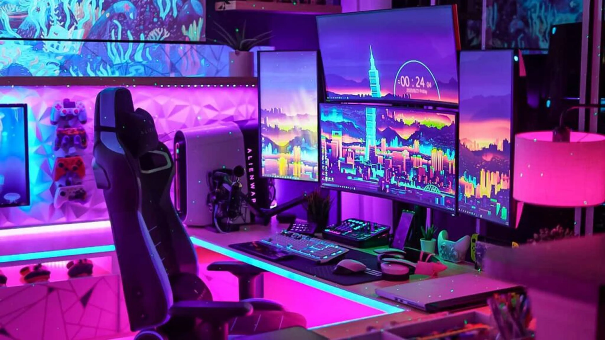

Componentes
Aquí encontrarás todas las piezas necesarias para poder armarte un PC de primera calidad o si ya cuentas con un equipo le podrás realizar un upgrade de la forma que prefieras

Accesorios y monitores
En esta sección se encuentran todos los accesorios que un gamer necesita: auriculares, teclado, ratón y más, además tambien hay variedad de monitores para cada gusto

Pc's armados
Aqui podrás encontrar nuestros equipos previamente armados estos cuentan con excelentes componentes para cada gama, además de bellos gabinetes y garantía de 1 año